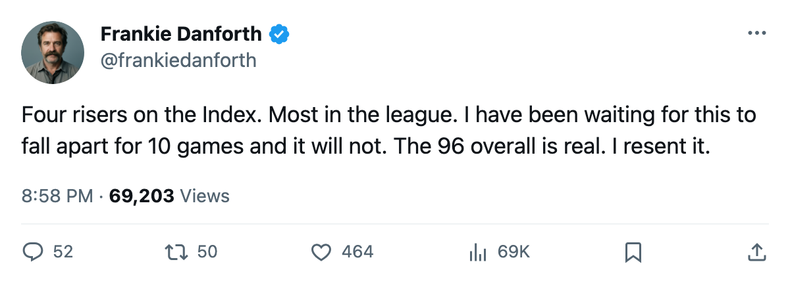
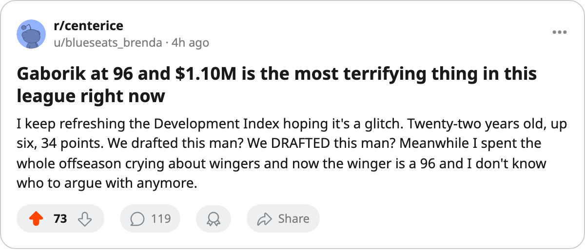

TOR
TORYoung Guns Watch: 4 Leafs on the Index risers, and I cannot find a reason to be smug about any of them
The Development Index has more Toronto players climbing than any other club. The streak is not luck. That is the problem.
 Frankie DanforthColumnist · Queen City Telegram
Frankie DanforthColumnist · Queen City Telegram
I have spent this entire season looking over my shoulder. Every time someone scored, I waited for the inevitable regression, the bad bounce that would turn a 13-0 night against  Buffalo Sabres into a reminder that this team was one injury from mediocrity. Ten games later, I am still waiting. The Development Index says I have been wrong.
Buffalo Sabres into a reminder that this team was one injury from mediocrity. Ten games later, I am still waiting. The Development Index says I have been wrong.
Four Toronto players sit on the Bureau's risers list heading into this week. No other club can match that number. The Bureau's Book has  Marian Gaborik96 up 6 on the Index, reading a 96 overall at 22 years old. That is not a small sample. That is 34 points in 25 games at 18.4 minutes a night on a $1.10M salary. I have never trusted a winger. I do not trust this one. But the Index does not care about my preferences.
Marian Gaborik96 up 6 on the Index, reading a 96 overall at 22 years old. That is not a small sample. That is 34 points in 25 games at 18.4 minutes a night on a $1.10M salary. I have never trusted a winger. I do not trust this one. But the Index does not care about my preferences.
 Brad Richards85 is up 4 on the Index, reading 85 overall with 27 points in 25 games. The column about him I wrote Friday stands — he is the answer behind
Brad Richards85 is up 4 on the Index, reading 85 overall with 27 points in 25 games. The column about him I wrote Friday stands — he is the answer behind  Mats Sundin89 and the $1.00M salary is a joke that expires in one year. But watching him climb the Index makes the July conversation louder, not quieter. He is making himself more expensive in real time.
Mats Sundin89 and the $1.00M salary is a joke that expires in one year. But watching him climb the Index makes the July conversation louder, not quieter. He is making himself more expensive in real time.
The two I did not expect are  Rostislav Klesla82 and
Rostislav Klesla82 and  Rick Nash81. Klesla is up 5 on the Index, reading 82 overall, 13 points in 25 games at $0.90M. A 22-year-old defenceman on an entry-level deal playing 14.7 minutes a night while the rest of the league's top-four defencemen are on 5- and 6-year contracts. Nash is up 5 too, reading 81 overall, 22 points in 25 games at 12.9 minutes a night. Twenty years old. $1.20M. One year left.
Rick Nash81. Klesla is up 5 on the Index, reading 82 overall, 13 points in 25 games at $0.90M. A 22-year-old defenceman on an entry-level deal playing 14.7 minutes a night while the rest of the league's top-four defencemen are on 5- and 6-year contracts. Nash is up 5 too, reading 81 overall, 22 points in 25 games at 12.9 minutes a night. Twenty years old. $1.20M. One year left.
I keep waiting for the floor to drop out. The team has 147 goals for and 76 against through 25 games, 40 points, the W10 streak running. The numbers are not close to what I expected in October. I expected a 35-point team fighting  Ottawa Senators for third place. Instead I am writing about Development Index risers like some kind of
Ottawa Senators for third place. Instead I am writing about Development Index risers like some kind of  Colorado Avalanche beat writer who has never known suffering.
Colorado Avalanche beat writer who has never known suffering.
Here is what terrifies me: none of these four are the reason I worry. They are the reason I should stop worrying, and I do not know how to do that. The second centre is playing like a top-two centre. The 22-year-old winger has a 96 overall. The defence prospects are climbing. The 39-year-old goalie comes back tomorrow and will have to take his job back from a man who has 13 starts and a 10-game winning streak.
The Index is up. The streak is real. I hate all of it. I will be here tomorrow with my yellow highlighter and my box scores, waiting for it to end. But I want to say clearly, for the record: the kids are the reason it has not ended yet.

